CE2407A
Tutorial 5
Tutorial Set 3
Questions 2–5
Week 13
Tutorial Set 3 · Question 2
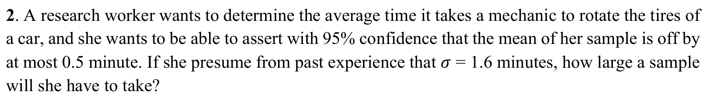
Q2 · Choosing the sample size
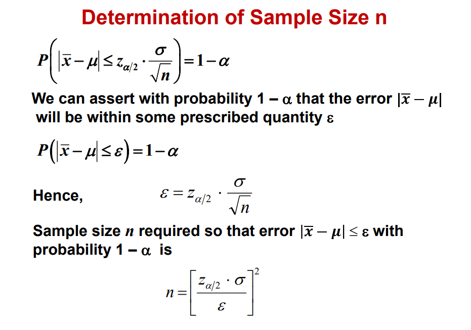
T3 Q2 · Tire rotation times
Tutorial Set 3 · Question 3
![Tutorial Set 3, Question 3. A structure will rest on 100 piles. Nine test piles at random locations in the supporting soil were loaded to failure. Their capacities were 82, 75, 95, 90, 88, 92, 78, 85 and 80 tonnes. Assume a normal population. (a) Estimate the mean and variance of pile capacity at the site. (b) Find the 95% confidence interval for mean pile capacity, treating population variance as known and equal to the sample variance. (c) Find the 95% confidence interval for the mean when population variance is unknown.](assets/questions/set3-q3.png)
Q3(b) · Mean with known variance
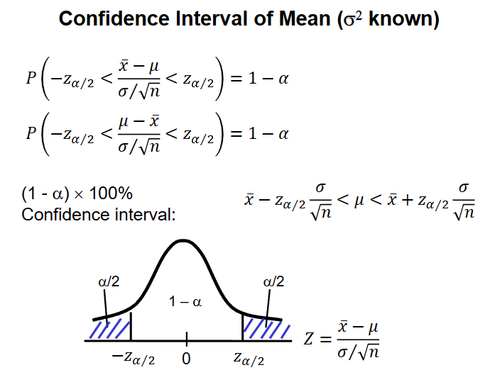
Q3(c) · Mean with unknown variance
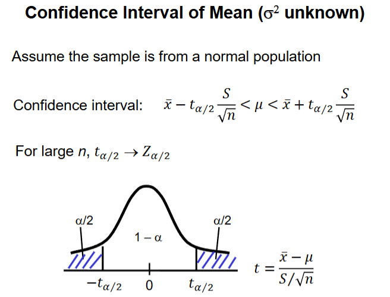
Q3(c) · Student’s t-value table
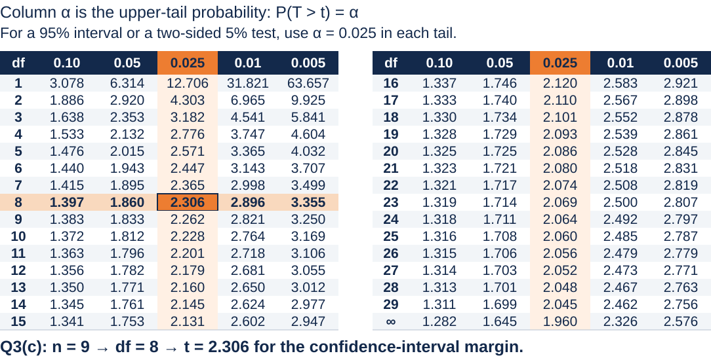
T3 Q3 · Pile capacities
Tutorial Set 3 · Question 4
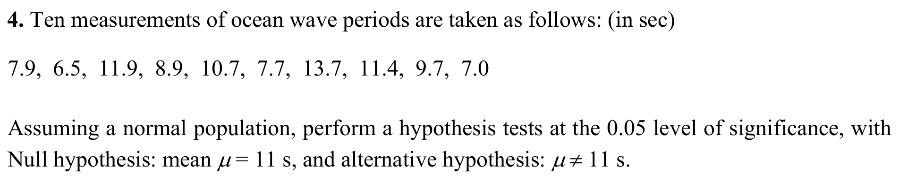
Q4 · Testing the mean wave period
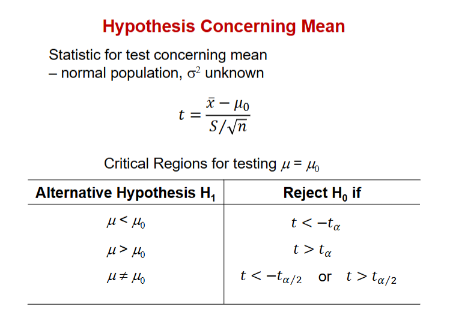
Q4 · Student’s t-value table
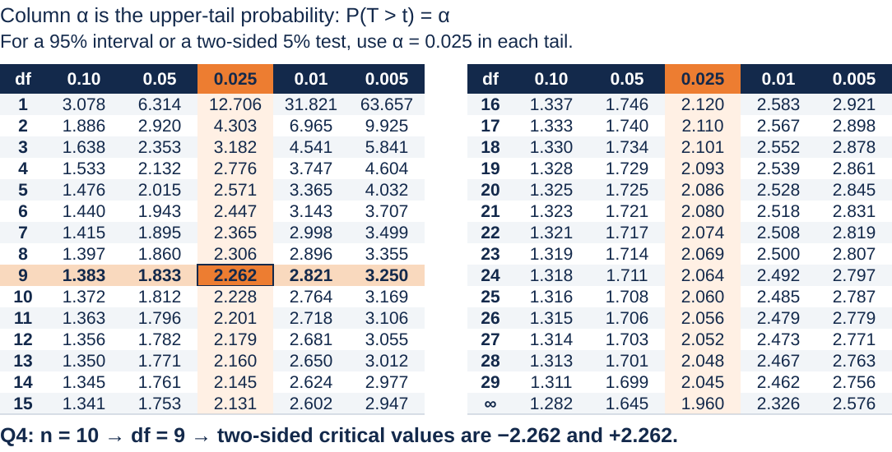
T3 Q4 · Ocean wave periods
Tutorial Set 3 · Question 5
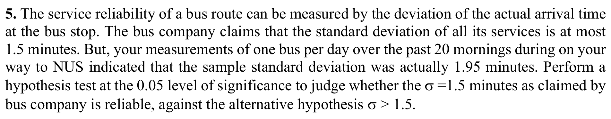
Q5 · Testing a population variance
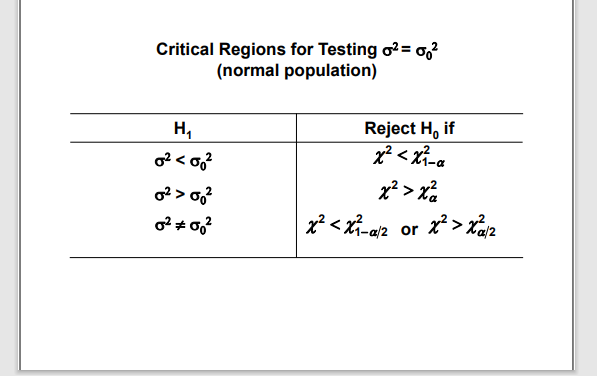
Q5 · Comparison: wafer thickness
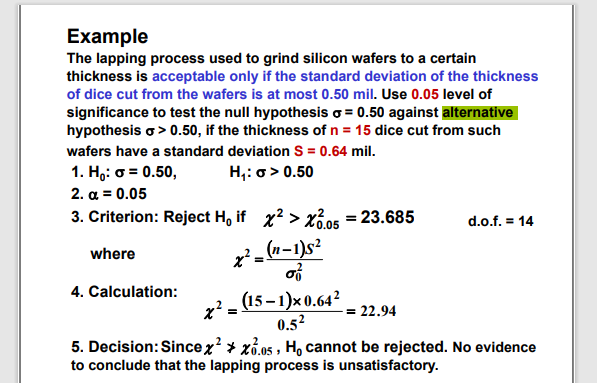